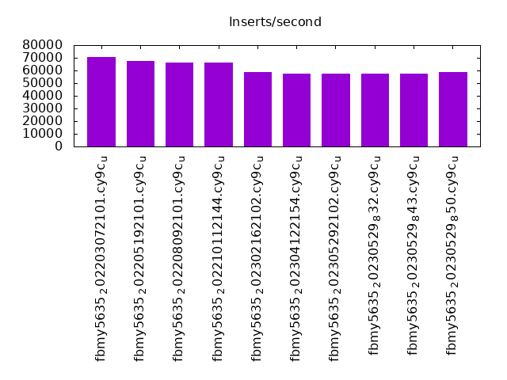

Introduction
This is a report for the insert benchmark with 480M docs and 24 client(s). It is generated by scripts (bash, awk, sed) and Tufte might not be impressed. An overview of the insert benchmark is here and a short update is here. Below, by DBMS, I mean DBMS+version.config. An example is my8020.c10b40 where my means MySQL, 8020 is version 8.0.20 and c10b40 is the name for the configuration file.
The test server has 80 cores, hyperthreads enabled, 256G RAM and fast NVMe with XFS. The benchmark was run with 24 clients and there were 1 or 3 connections per client (1 for queries or inserts without rate limits, 1+1 for rate limited inserts+deletes). There are 24 tables, with a client per table. It loads 20M rows per-table without secondary indexes, creates secondary indexes, then inserts 50M rows per-table with a delete per insert to avoid growing the table. It then does 3 read+write tests for 3600s each that do queries as fast as possible with 100, 500 and then 1000 inserts/second/client concurrent with the queries and 1000 deletes/second to avoid growing the table. The database is cached by RocksDB.
The tested DBMS are:
- fbmy5635_202203072101.cy9c_u - FB MySQL 5.6.35 compiled at git hash e7d976ee (7 Mar 2022 tag) with RocksDB 6.28.2, cy9c_u (base) config
- fbmy5635_202205192101.cy9c_u - FB MySQL 5.6.35 compiled at git hash d503bd77 (19 May 2022 tag) with RocksDB 7.2.2, cy9c_u (base) config
- fbmy5635_202208092101.cy9c_u - FB MySQL 5.6.35 compiled at git hash 877a0e58 (9 Aug 2022 tag) with RocksDB 7.3.1, cy9c_u (base) config
- fbmy5635_202210112144.cy9c_u - FB MySQL 5.6.35 compiled at git hash c691c716 (11 Oct 2022 tag) with RocksDB 7.3.1, cy9c_u (base) config
- fbmy5635_202302162102.cy9c_u - FB MySQL 5.6.35 compiled at git hash 21a2b0aa (16 Feb 2023 tag) with RocksDB 7.10.0, cy9c_u (base) config
- fbmy5635_202304122154.cy9c_u - FB MySQL 5.6.35 compiled at git hash 205c31dd (12 Apr 2023 tag) with RocksDB 7.10.2, cy9c_u (base) config
- fbmy5635_202305292102.cy9c_u - FB MySQL 5.6.35 compiled at git hash b739eac1 (29 May 2023 tag) with RocksDB 8.2.1, cy9c_u (base) config
- fbmy5635_20230529_832.cy9c_u - FB MySQL 5.6.35 compiled at git hash b739eac1 (29 May 2023 tag) with RocksDB 8.3.2, cy9c_u (base) config
- fbmy5635_20230529_843.cy9c_u - FB MySQL 5.6.35 compiled at git hash b739eac1 (29 May 2023 tag) with RocksDB 8.4.3, cy9c_u (base) config
- fbmy5635_20230529_850.cy9c_u - FB MySQL 5.6.35 compiled at git hash b739eac1 (29 May 2023 tag) with RocksDB 8.5.0, cy9c_u (base) config
Contents
- Summary
- l.i0: load without secondary indexes
- l.x: create secondary indexes
- l.i1: continue load after secondary indexes created
- q100.1: range queries with 100 insert/s per client
- q500.1: range queries with 500 insert/s per client
- q1000.1: range queries with 1000 insert/s per client
Summary
The numbers are inserts/s for l.i0 and l.i1, indexed docs (or rows) /s for l.x and queries/s for q100, q500, q1000. The values are the average rate over the entire test for inserts (IPS) and queries (QPS). The range of values for IPS and QPS is split into 3 parts: bottom 25%, middle 50%, top 25%. Values in the bottom 25% have a red background, values in the top 25% have a green background and values in the middle have no color. A gray background is used for values that can be ignored because the DBMS did not sustain the target insert rate. Red backgrounds are not used when the minimum value is within 80% of the max value.
| dbms | l.i0 | l.x | l.i1 | q100.1 | q500.1 | q1000.1 |
|---|---|---|---|---|---|---|
| fbmy5635_202203072101.cy9c_u | 551091 | 1428869 | 70734 | 106833 | 100813 | 87179 |
| fbmy5635_202205192101.cy9c_u | 526316 | 1403801 | 67302 | 104482 | 95911 | 83120 |
| fbmy5635_202208092101.cy9c_u | 528634 | 1403801 | 66464 | 103340 | 95167 | 83973 |
| fbmy5635_202210112144.cy9c_u | 528053 | 1399708 | 66489 | 103425 | 95203 | 82775 |
| fbmy5635_202302162102.cy9c_u | 541150 | 1407918 | 58887 | 101221 | 92228 | 81267 |
| fbmy5635_202304122154.cy9c_u | 529801 | 1403801 | 57290 | 101199 | 93164 | 81708 |
| fbmy5635_202305292102.cy9c_u | 529801 | 1403801 | 57293 | 101644 | 92902 | 81594 |
| fbmy5635_20230529_832.cy9c_u | 541150 | 1403801 | 57512 | 99011 | 90599 | 80171 |
| fbmy5635_20230529_843.cy9c_u | 518919 | 1383573 | 57441 | 97081 | 87620 | 77262 |
| fbmy5635_20230529_850.cy9c_u | 515575 | 1387572 | 58694 | 97178 | 87805 | 77822 |
This table has relative throughput, throughput for the DBMS relative to the DBMS in the first line, using the absolute throughput from the previous table. Values less than 0.95 have a yellow background. Values greater than 1.05 have a blue background.
| dbms | l.i0 | l.x | l.i1 | q100.1 | q500.1 | q1000.1 |
|---|---|---|---|---|---|---|
| fbmy5635_202203072101.cy9c_u | 1.00 | 1.00 | 1.00 | 1.00 | 1.00 | 1.00 |
| fbmy5635_202205192101.cy9c_u | 0.96 | 0.98 | 0.95 | 0.98 | 0.95 | 0.95 |
| fbmy5635_202208092101.cy9c_u | 0.96 | 0.98 | 0.94 | 0.97 | 0.94 | 0.96 |
| fbmy5635_202210112144.cy9c_u | 0.96 | 0.98 | 0.94 | 0.97 | 0.94 | 0.95 |
| fbmy5635_202302162102.cy9c_u | 0.98 | 0.99 | 0.83 | 0.95 | 0.91 | 0.93 |
| fbmy5635_202304122154.cy9c_u | 0.96 | 0.98 | 0.81 | 0.95 | 0.92 | 0.94 |
| fbmy5635_202305292102.cy9c_u | 0.96 | 0.98 | 0.81 | 0.95 | 0.92 | 0.94 |
| fbmy5635_20230529_832.cy9c_u | 0.98 | 0.98 | 0.81 | 0.93 | 0.90 | 0.92 |
| fbmy5635_20230529_843.cy9c_u | 0.94 | 0.97 | 0.81 | 0.91 | 0.87 | 0.89 |
| fbmy5635_20230529_850.cy9c_u | 0.94 | 0.97 | 0.83 | 0.91 | 0.87 | 0.89 |
This lists the average rate of inserts/s for the tests that do inserts concurrent with queries. For such tests the query rate is listed in the table above. The read+write tests are setup so that the insert rate should match the target rate every second. Cells that are not at least 95% of the target have a red background to indicate a failure to satisfy the target.
| dbms | q100.1 | q500.1 | q1000.1 |
|---|---|---|---|
| fbmy5635_202203072101.cy9c_u | 2381 | 11907 | 23828 |
| fbmy5635_202205192101.cy9c_u | 2381 | 11907 | 23821 |
| fbmy5635_202208092101.cy9c_u | 2381 | 11907 | 23821 |
| fbmy5635_202210112144.cy9c_u | 2381 | 11907 | 23828 |
| fbmy5635_202302162102.cy9c_u | 2381 | 11907 | 23828 |
| fbmy5635_202304122154.cy9c_u | 2381 | 11907 | 23828 |
| fbmy5635_202305292102.cy9c_u | 2381 | 11907 | 23834 |
| fbmy5635_20230529_832.cy9c_u | 2381 | 11911 | 23828 |
| fbmy5635_20230529_843.cy9c_u | 2381 | 11907 | 23828 |
| fbmy5635_20230529_850.cy9c_u | 2381 | 11907 | 23828 |
| target | 2400 | 12000 | 24000 |
l.i0
l.i0: load without secondary indexes. Graphs for performance per 1-second interval are here.
Average throughput:

Insert response time histogram: each cell has the percentage of responses that take <= the time in the header and max is the max response time in seconds. For the max column values in the top 25% of the range have a red background and in the bottom 25% of the range have a green background. The red background is not used when the min value is within 80% of the max value.
| dbms | 256us | 1ms | 4ms | 16ms | 64ms | 256ms | 1s | 4s | 16s | gt | max |
|---|---|---|---|---|---|---|---|---|---|---|---|
| fbmy5635_202203072101.cy9c_u | 0.364 | 48.064 | 51.530 | 0.001 | 0.041 | 0.100 | |||||
| fbmy5635_202205192101.cy9c_u | 0.270 | 39.209 | 60.480 | 0.041 | 0.100 | ||||||
| fbmy5635_202208092101.cy9c_u | 0.267 | 38.366 | 61.325 | 0.002 | 0.041 | 0.110 | |||||
| fbmy5635_202210112144.cy9c_u | 0.277 | 40.677 | 59.003 | 0.002 | 0.041 | 0.102 | |||||
| fbmy5635_202302162102.cy9c_u | 0.204 | 46.894 | 52.860 | 0.001 | 0.041 | 0.097 | |||||
| fbmy5635_202304122154.cy9c_u | 0.203 | 42.912 | 56.844 | 0.001 | 0.041 | 0.100 | |||||
| fbmy5635_202305292102.cy9c_u | 0.169 | 44.519 | 55.271 | nonzero | 0.041 | 0.111 | |||||
| fbmy5635_20230529_832.cy9c_u | 0.154 | 44.826 | 54.977 | 0.001 | 0.041 | 0.096 | |||||
| fbmy5635_20230529_843.cy9c_u | 0.129 | 37.458 | 62.371 | 0.001 | 0.041 | 0.103 | |||||
| fbmy5635_20230529_850.cy9c_u | 0.123 | 38.193 | 61.642 | 0.001 | 0.041 | 0.117 |
Performance metrics for the DBMS listed above. Some are normalized by throughput, others are not. Legend for results is here.
ips qps rps rmbps wps wmbps rpq rkbpq wpi wkbpi csps cpups cspq cpupq dbgb1 dbgb2 rss maxop p50 p99 tag 551091 0 0 0.0 2236.1 262.8 0.000 0.000 0.004 0.488 721907 39.4 1.310 57 15.6 16.7 5.0 0.100 23476 14186 480m.fbmy5635_202203072101.cy9c_u 526316 0 0 0.0 2081.5 247.3 0.000 0.000 0.004 0.481 719241 38.7 1.367 59 15.6 16.7 4.8 0.100 22093 14186 480m.fbmy5635_202205192101.cy9c_u 528634 0 0 0.0 2095.3 250.1 0.000 0.000 0.004 0.484 710411 38.9 1.344 59 15.9 17.1 4.8 0.110 22375 13985 480m.fbmy5635_202208092101.cy9c_u 528053 0 0 0.0 2102.3 249.8 0.000 0.000 0.004 0.484 668029 38.9 1.265 59 15.9 17.0 4.9 0.102 22480 13586 480m.fbmy5635_202210112144.cy9c_u 541150 0 0 0.0 1767.8 208.2 0.000 0.000 0.003 0.394 658328 38.6 1.217 57 15.2 16.3 3.7 0.097 23576 14585 480m.fbmy5635_202302162102.cy9c_u 529801 0 0 0.0 1761.3 206.8 0.000 0.000 0.003 0.400 664892 38.6 1.255 58 15.8 17.0 3.9 0.100 22776 14683 480m.fbmy5635_202304122154.cy9c_u 529801 0 0 0.0 1706.5 200.0 0.000 0.000 0.003 0.387 659103 38.7 1.244 58 15.3 16.4 3.7 0.111 22478 13788 480m.fbmy5635_202305292102.cy9c_u 541150 0 0 0.0 1719.9 201.3 0.000 0.000 0.003 0.381 634107 40.0 1.172 59 15.4 16.6 3.7 0.096 23279 14785 480m.fbmy5635_20230529_832.cy9c_u 518919 0 0 0.0 1651.2 194.0 0.000 0.000 0.003 0.383 614343 39.8 1.184 61 15.7 16.8 3.8 0.103 22477 14387 480m.fbmy5635_20230529_843.cy9c_u 515575 0 0 0.0 1634.2 191.5 0.000 0.000 0.003 0.380 634367 39.4 1.230 61 15.3 16.5 3.7 0.117 22176 14086 480m.fbmy5635_20230529_850.cy9c_u
l.x
l.x: create secondary indexes.
Average throughput:
Performance metrics for the DBMS listed above. Some are normalized by throughput, others are not. Legend for results is here.
ips qps rps rmbps wps wmbps rpq rkbpq wpi wkbpi csps cpups cspq cpupq dbgb1 dbgb2 rss maxop p50 p99 tag 1428869 0 30 0.2 1971.4 216.9 0.000 0.000 0.001 0.155 32381 28.2 0.023 16 32.4 33.5 47.1 0.003 NA NA 480m.fbmy5635_202203072101.cy9c_u 1403801 0 29 0.2 1918.9 211.5 0.000 0.000 0.001 0.154 32858 28.4 0.023 16 32.3 33.5 44.5 0.003 NA NA 480m.fbmy5635_202205192101.cy9c_u 1403801 0 29 0.2 1926.5 211.5 0.000 0.000 0.001 0.154 33232 28.6 0.024 16 32.4 33.5 46.1 0.003 NA NA 480m.fbmy5635_202208092101.cy9c_u 1399708 0 29 0.2 1909.7 209.5 0.000 0.000 0.001 0.153 33596 28.5 0.024 16 32.4 33.6 45.0 0.002 NA NA 480m.fbmy5635_202210112144.cy9c_u 1407918 0 29 0.2 1796.9 195.6 0.000 0.000 0.001 0.142 31937 28.0 0.023 16 32.3 33.5 42.0 0.003 NA NA 480m.fbmy5635_202302162102.cy9c_u 1403801 0 29 0.2 1805.3 197.3 0.000 0.000 0.001 0.144 31130 28.0 0.022 16 32.4 33.5 39.9 0.003 NA NA 480m.fbmy5635_202304122154.cy9c_u 1403801 0 29 0.2 1803.7 196.8 0.000 0.000 0.001 0.144 31029 27.9 0.022 16 32.3 33.5 39.0 0.002 NA NA 480m.fbmy5635_202305292102.cy9c_u 1403801 0 29 0.2 1793.1 195.2 0.000 0.000 0.001 0.142 33181 28.8 0.024 16 32.3 33.5 40.5 0.002 NA NA 480m.fbmy5635_20230529_832.cy9c_u 1383573 0 29 0.2 1811.3 198.4 0.000 0.000 0.001 0.147 34733 28.9 0.025 17 32.3 33.5 41.7 0.003 NA NA 480m.fbmy5635_20230529_843.cy9c_u 1387572 0 29 0.2 1774.9 193.3 0.000 0.000 0.001 0.143 34035 29.1 0.025 17 32.4 33.5 41.4 0.003 NA NA 480m.fbmy5635_20230529_850.cy9c_u
l.i1
l.i1: continue load after secondary indexes created. Graphs for performance per 1-second interval are here.
Average throughput:
Insert response time histogram: each cell has the percentage of responses that take <= the time in the header and max is the max response time in seconds. For the max column values in the top 25% of the range have a red background and in the bottom 25% of the range have a green background. The red background is not used when the min value is within 80% of the max value.
| dbms | 256us | 1ms | 4ms | 16ms | 64ms | 256ms | 1s | 4s | 16s | gt | max |
|---|---|---|---|---|---|---|---|---|---|---|---|
| fbmy5635_202203072101.cy9c_u | 0.001 | 0.051 | 31.710 | 68.238 | 0.001 | 0.091 | |||||
| fbmy5635_202205192101.cy9c_u | nonzero | 0.043 | 24.771 | 75.184 | 0.002 | 0.218 | |||||
| fbmy5635_202208092101.cy9c_u | 0.049 | 23.204 | 76.744 | 0.004 | 0.142 | ||||||
| fbmy5635_202210112144.cy9c_u | 0.046 | 23.245 | 76.706 | 0.004 | 0.160 | ||||||
| fbmy5635_202302162102.cy9c_u | 0.046 | 13.080 | 86.641 | 0.232 | 0.001 | 0.340 | |||||
| fbmy5635_202304122154.cy9c_u | 0.040 | 13.382 | 86.058 | 0.499 | 0.017 | 0.004 | 1.050 | ||||
| fbmy5635_202305292102.cy9c_u | 0.042 | 13.635 | 85.783 | 0.516 | 0.021 | 0.003 | 1.341 | ||||
| fbmy5635_20230529_832.cy9c_u | 0.050 | 14.537 | 84.833 | 0.574 | 0.006 | 0.363 | |||||
| fbmy5635_20230529_843.cy9c_u | 0.063 | 13.791 | 85.684 | 0.446 | 0.016 | 0.544 | |||||
| fbmy5635_20230529_850.cy9c_u | 0.040 | 13.558 | 86.192 | 0.189 | 0.020 | 0.808 |
Delete response time histogram: each cell has the percentage of responses that take <= the time in the header and max is the max response time in seconds. For the max column values in the top 25% of the range have a red background and in the bottom 25% of the range have a green background. The red background is not used when the min value is within 80% of the max value.
| dbms | 256us | 1ms | 4ms | 16ms | 64ms | 256ms | 1s | 4s | 16s | gt | max |
|---|---|---|---|---|---|---|---|---|---|---|---|
| fbmy5635_202203072101.cy9c_u | 0.003 | 0.050 | 37.218 | 62.728 | 0.001 | 0.168 | |||||
| fbmy5635_202205192101.cy9c_u | nonzero | 0.044 | 27.279 | 72.673 | 0.003 | nonzero | 0.274 | ||||
| fbmy5635_202208092101.cy9c_u | nonzero | 0.049 | 26.032 | 73.913 | 0.005 | nonzero | 0.281 | ||||
| fbmy5635_202210112144.cy9c_u | 0.002 | 0.045 | 25.742 | 74.205 | 0.005 | nonzero | 0.275 | ||||
| fbmy5635_202302162102.cy9c_u | nonzero | 0.047 | 13.914 | 85.797 | 0.240 | 0.002 | 0.849 | ||||
| fbmy5635_202304122154.cy9c_u | nonzero | 0.040 | 13.835 | 85.595 | 0.509 | 0.017 | 0.004 | 1.051 | |||
| fbmy5635_202305292102.cy9c_u | nonzero | 0.043 | 13.968 | 85.438 | 0.527 | 0.021 | 0.003 | 1.341 | |||
| fbmy5635_20230529_832.cy9c_u | nonzero | 0.050 | 14.856 | 84.495 | 0.592 | 0.006 | 0.937 | ||||
| fbmy5635_20230529_843.cy9c_u | nonzero | 0.064 | 14.129 | 85.334 | 0.457 | 0.016 | 0.799 | ||||
| fbmy5635_20230529_850.cy9c_u | 0.041 | 14.338 | 85.407 | 0.194 | 0.020 | 0.912 |
Performance metrics for the DBMS listed above. Some are normalized by throughput, others are not. Legend for results is here.
ips qps rps rmbps wps wmbps rpq rkbpq wpi wkbpi csps cpups cspq cpupq dbgb1 dbgb2 rss maxop p50 p99 tag 70734 0 97 1.1 1851.9 220.9 0.001 0.017 0.026 3.199 207064 17.3 2.927 196 42.2 42.3 177.3 0.091 2947 2647 480m.fbmy5635_202203072101.cy9c_u 67302 0 124 1.1 1706.8 204.0 0.002 0.017 0.025 3.104 193528 16.9 2.876 201 46.0 46.1 177.1 0.218 2798 2498 480m.fbmy5635_202205192101.cy9c_u 66464 0 140 1.2 1722.1 205.5 0.002 0.018 0.026 3.167 188717 17.0 2.839 205 46.0 46.1 177.3 0.142 2797 2497 480m.fbmy5635_202208092101.cy9c_u 66489 0 137 1.2 1710.2 204.1 0.002 0.018 0.026 3.144 190236 17.1 2.861 206 44.5 44.6 177.3 0.160 2797 2497 480m.fbmy5635_202210112144.cy9c_u 58887 0 74 0.9 1235.3 146.3 0.001 0.016 0.021 2.545 208901 16.1 3.547 219 38.8 39.0 178.1 0.340 2498 799 480m.fbmy5635_202302162102.cy9c_u 57290 0 107 1.0 1144.9 135.0 0.002 0.018 0.020 2.414 244208 16.5 4.263 230 44.9 45.0 177.9 1.050 2497 300 480m.fbmy5635_202304122154.cy9c_u 57293 0 115 1.0 1142.2 134.7 0.002 0.018 0.020 2.408 248925 16.9 4.345 236 49.6 49.8 177.9 1.341 2497 300 480m.fbmy5635_202305292102.cy9c_u 57512 0 147 1.3 1157.2 136.1 0.003 0.024 0.020 2.423 240384 17.7 4.180 246 45.1 45.3 177.9 0.363 2497 400 480m.fbmy5635_20230529_832.cy9c_u 57441 0 120 1.2 1147.5 135.2 0.002 0.021 0.020 2.410 235831 18.1 4.106 252 42.8 43.0 178.2 0.544 2497 400 480m.fbmy5635_20230529_843.cy9c_u 58694 0 82 0.9 1236.8 146.0 0.001 0.016 0.021 2.548 203875 17.7 3.474 241 39.9 40.0 178.0 0.808 2498 599 480m.fbmy5635_20230529_850.cy9c_u
q100.1
q100.1: range queries with 100 insert/s per client. Graphs for performance per 1-second interval are here.
Average throughput:
Query response time histogram: each cell has the percentage of responses that take <= the time in the header and max is the max response time in seconds. For max values in the top 25% of the range have a red background and in the bottom 25% of the range have a green background. The red background is not used when the min value is within 80% of the max value.
| dbms | 256us | 1ms | 4ms | 16ms | 64ms | 256ms | 1s | 4s | 16s | gt | max |
|---|---|---|---|---|---|---|---|---|---|---|---|
| fbmy5635_202203072101.cy9c_u | 84.488 | 15.511 | 0.001 | nonzero | nonzero | 0.035 | |||||
| fbmy5635_202205192101.cy9c_u | 81.186 | 18.813 | 0.001 | nonzero | nonzero | 0.018 | |||||
| fbmy5635_202208092101.cy9c_u | 79.756 | 20.243 | 0.001 | nonzero | nonzero | 0.055 | |||||
| fbmy5635_202210112144.cy9c_u | 79.648 | 20.351 | 0.001 | nonzero | nonzero | 0.067 | |||||
| fbmy5635_202302162102.cy9c_u | 75.991 | 24.008 | 0.001 | nonzero | nonzero | 0.047 | |||||
| fbmy5635_202304122154.cy9c_u | 75.956 | 24.043 | 0.001 | nonzero | nonzero | 0.054 | |||||
| fbmy5635_202305292102.cy9c_u | 76.670 | 23.328 | 0.001 | nonzero | nonzero | 0.063 | |||||
| fbmy5635_20230529_832.cy9c_u | 72.627 | 27.372 | 0.001 | nonzero | nonzero | 0.033 | |||||
| fbmy5635_20230529_843.cy9c_u | 69.420 | 30.578 | 0.001 | nonzero | nonzero | nonzero | 0.074 | ||||
| fbmy5635_20230529_850.cy9c_u | 69.438 | 30.561 | 0.001 | nonzero | nonzero | nonzero | 0.076 |
Insert response time histogram: each cell has the percentage of responses that take <= the time in the header and max is the max response time in seconds. For max values in the top 25% of the range have a red background and in the bottom 25% of the range have a green background. The red background is not used when the min value is within 80% of the max value.
| dbms | 256us | 1ms | 4ms | 16ms | 64ms | 256ms | 1s | 4s | 16s | gt | max |
|---|---|---|---|---|---|---|---|---|---|---|---|
| fbmy5635_202203072101.cy9c_u | 99.998 | 0.002 | 0.005 | ||||||||
| fbmy5635_202205192101.cy9c_u | 99.997 | 0.002 | 0.001 | 0.040 | |||||||
| fbmy5635_202208092101.cy9c_u | 99.998 | 0.002 | 0.005 | ||||||||
| fbmy5635_202210112144.cy9c_u | 99.999 | 0.001 | 0.006 | ||||||||
| fbmy5635_202302162102.cy9c_u | 99.995 | 0.005 | 0.007 | ||||||||
| fbmy5635_202304122154.cy9c_u | 99.975 | 0.025 | 0.006 | ||||||||
| fbmy5635_202305292102.cy9c_u | 99.913 | 0.087 | 0.007 | ||||||||
| fbmy5635_20230529_832.cy9c_u | 99.986 | 0.014 | 0.007 | ||||||||
| fbmy5635_20230529_843.cy9c_u | 99.998 | 0.002 | 0.005 | ||||||||
| fbmy5635_20230529_850.cy9c_u | 99.972 | 0.028 | 0.007 |
Delete response time histogram: each cell has the percentage of responses that take <= the time in the header and max is the max response time in seconds. For max values in the top 25% of the range have a red background and in the bottom 25% of the range have a green background. The red background is not used when the min value is within 80% of the max value.
| dbms | 256us | 1ms | 4ms | 16ms | 64ms | 256ms | 1s | 4s | 16s | gt | max |
|---|---|---|---|---|---|---|---|---|---|---|---|
| fbmy5635_202203072101.cy9c_u | 0.094 | 99.903 | 0.002 | 0.001 | 0.059 | ||||||
| fbmy5635_202205192101.cy9c_u | 0.002 | 99.992 | 0.002 | 0.003 | 0.001 | 0.076 | |||||
| fbmy5635_202208092101.cy9c_u | 0.002 | 99.994 | 0.001 | 0.003 | 0.058 | ||||||
| fbmy5635_202210112144.cy9c_u | 0.001 | 99.995 | 0.001 | 0.002 | 0.001 | 0.073 | |||||
| fbmy5635_202302162102.cy9c_u | 0.001 | 99.991 | 0.006 | 0.001 | 0.001 | 0.065 | |||||
| fbmy5635_202304122154.cy9c_u | 0.001 | 99.987 | 0.011 | 0.001 | 0.020 | ||||||
| fbmy5635_202305292102.cy9c_u | 99.950 | 0.044 | 0.006 | 0.001 | 0.064 | ||||||
| fbmy5635_20230529_832.cy9c_u | 99.986 | 0.012 | 0.002 | 0.045 | |||||||
| fbmy5635_20230529_843.cy9c_u | 0.001 | 99.990 | 0.008 | 0.001 | 0.001 | 0.082 | |||||
| fbmy5635_20230529_850.cy9c_u | 99.986 | 0.011 | 0.002 | 0.001 | 0.078 |
Performance metrics for the DBMS listed above. Some are normalized by throughput, others are not. Legend for results is here.
ips qps rps rmbps wps wmbps rpq rkbpq wpi wkbpi csps cpups cspq cpupq dbgb1 dbgb2 rss maxop p50 p99 tag 2381 106833 5 0.1 98.0 11.1 0.000 0.001 0.041 4.779 485770 31.3 4.547 234 36.0 37.9 178.7 0.035 4460 3916 480m.fbmy5635_202203072101.cy9c_u 2381 104482 11 0.1 133.1 15.5 0.000 0.001 0.056 6.666 478410 31.6 4.579 242 35.8 37.7 178.7 0.018 4396 3836 480m.fbmy5635_202205192101.cy9c_u 2381 103340 20 0.2 117.9 13.3 0.000 0.002 0.050 5.739 467533 31.5 4.524 244 35.7 37.6 178.5 0.055 4348 3788 480m.fbmy5635_202208092101.cy9c_u 2381 103425 17 0.2 144.4 16.7 0.000 0.002 0.061 7.166 467807 31.7 4.523 245 35.7 37.6 179.0 0.067 4316 3756 480m.fbmy5635_202210112144.cy9c_u 2381 101221 14 0.3 83.0 9.3 0.000 0.003 0.035 3.987 452000 31.5 4.465 249 36.9 38.9 179.5 0.047 4251 3724 480m.fbmy5635_202302162102.cy9c_u 2381 101199 8 0.2 85.2 9.5 0.000 0.002 0.036 4.096 451916 31.4 4.466 248 36.6 38.6 179.4 0.054 4220 3724 480m.fbmy5635_202304122154.cy9c_u 2381 101644 16 0.4 95.4 10.8 0.000 0.004 0.040 4.645 456455 31.6 4.491 249 36.9 38.9 179.7 0.063 4188 3628 480m.fbmy5635_202305292102.cy9c_u 2381 99011 14 0.3 87.1 9.8 0.000 0.003 0.037 4.205 445413 32.3 4.499 261 36.7 38.7 179.6 0.033 4204 3548 480m.fbmy5635_20230529_832.cy9c_u 2381 97081 17 0.4 90.2 10.2 0.000 0.004 0.038 4.366 437948 32.3 4.511 266 36.9 38.9 179.6 0.074 4092 3613 480m.fbmy5635_20230529_843.cy9c_u 2381 97178 17 0.2 74.9 8.2 0.000 0.002 0.031 3.543 437149 32.1 4.498 264 36.9 38.9 179.3 0.076 4044 3580 480m.fbmy5635_20230529_850.cy9c_u
q500.1
q500.1: range queries with 500 insert/s per client. Graphs for performance per 1-second interval are here.
Average throughput:
Query response time histogram: each cell has the percentage of responses that take <= the time in the header and max is the max response time in seconds. For max values in the top 25% of the range have a red background and in the bottom 25% of the range have a green background. The red background is not used when the min value is within 80% of the max value.
| dbms | 256us | 1ms | 4ms | 16ms | 64ms | 256ms | 1s | 4s | 16s | gt | max |
|---|---|---|---|---|---|---|---|---|---|---|---|
| fbmy5635_202203072101.cy9c_u | 76.116 | 23.882 | 0.001 | nonzero | nonzero | nonzero | 0.082 | ||||
| fbmy5635_202205192101.cy9c_u | 67.040 | 32.958 | 0.001 | nonzero | nonzero | nonzero | 0.079 | ||||
| fbmy5635_202208092101.cy9c_u | 65.812 | 34.187 | 0.001 | nonzero | nonzero | nonzero | 0.083 | ||||
| fbmy5635_202210112144.cy9c_u | 65.754 | 34.244 | 0.001 | nonzero | nonzero | nonzero | 0.082 | ||||
| fbmy5635_202302162102.cy9c_u | 59.718 | 40.279 | 0.002 | nonzero | nonzero | nonzero | 0.082 | ||||
| fbmy5635_202304122154.cy9c_u | 61.675 | 38.322 | 0.002 | nonzero | nonzero | nonzero | 0.081 | ||||
| fbmy5635_202305292102.cy9c_u | 61.034 | 38.963 | 0.002 | nonzero | nonzero | nonzero | 0.081 | ||||
| fbmy5635_20230529_832.cy9c_u | 56.428 | 43.569 | 0.003 | nonzero | nonzero | nonzero | 0.086 | ||||
| fbmy5635_20230529_843.cy9c_u | 49.886 | 50.111 | 0.003 | nonzero | nonzero | nonzero | 0.111 | ||||
| fbmy5635_20230529_850.cy9c_u | 50.325 | 49.672 | 0.003 | nonzero | nonzero | nonzero | 0.089 |
Insert response time histogram: each cell has the percentage of responses that take <= the time in the header and max is the max response time in seconds. For max values in the top 25% of the range have a red background and in the bottom 25% of the range have a green background. The red background is not used when the min value is within 80% of the max value.
| dbms | 256us | 1ms | 4ms | 16ms | 64ms | 256ms | 1s | 4s | 16s | gt | max |
|---|---|---|---|---|---|---|---|---|---|---|---|
| fbmy5635_202203072101.cy9c_u | 0.001 | 98.931 | 1.065 | 0.002 | 0.001 | 0.077 | |||||
| fbmy5635_202205192101.cy9c_u | 99.956 | 0.041 | 0.002 | nonzero | 0.079 | ||||||
| fbmy5635_202208092101.cy9c_u | 88.062 | 11.935 | 0.002 | 0.002 | 0.084 | ||||||
| fbmy5635_202210112144.cy9c_u | 93.970 | 6.026 | 0.002 | 0.001 | 0.082 | ||||||
| fbmy5635_202302162102.cy9c_u | 29.732 | 61.609 | 8.657 | 0.002 | 0.091 | ||||||
| fbmy5635_202304122154.cy9c_u | 25.330 | 72.294 | 2.373 | 0.004 | 0.094 | ||||||
| fbmy5635_202305292102.cy9c_u | 21.302 | 75.608 | 3.087 | 0.002 | 0.089 | ||||||
| fbmy5635_20230529_832.cy9c_u | 29.798 | 68.817 | 1.383 | 0.002 | 0.086 | ||||||
| fbmy5635_20230529_843.cy9c_u | 8.861 | 62.721 | 28.416 | 0.002 | 0.098 | ||||||
| fbmy5635_20230529_850.cy9c_u | 23.008 | 64.893 | 12.095 | 0.004 | 0.106 |
Delete response time histogram: each cell has the percentage of responses that take <= the time in the header and max is the max response time in seconds. For max values in the top 25% of the range have a red background and in the bottom 25% of the range have a green background. The red background is not used when the min value is within 80% of the max value.
| dbms | 256us | 1ms | 4ms | 16ms | 64ms | 256ms | 1s | 4s | 16s | gt | max |
|---|---|---|---|---|---|---|---|---|---|---|---|
| fbmy5635_202203072101.cy9c_u | 0.067 | 99.188 | 0.735 | 0.008 | 0.002 | 0.090 | |||||
| fbmy5635_202205192101.cy9c_u | 0.002 | 99.955 | 0.030 | 0.009 | 0.003 | 0.088 | |||||
| fbmy5635_202208092101.cy9c_u | nonzero | 89.873 | 10.114 | 0.009 | 0.003 | 0.088 | |||||
| fbmy5635_202210112144.cy9c_u | 95.055 | 4.934 | 0.008 | 0.003 | 0.091 | ||||||
| fbmy5635_202302162102.cy9c_u | 31.269 | 60.820 | 7.908 | 0.002 | 0.091 | ||||||
| fbmy5635_202304122154.cy9c_u | 28.750 | 69.128 | 2.117 | 0.005 | 0.097 | ||||||
| fbmy5635_202305292102.cy9c_u | 24.081 | 73.198 | 2.717 | 0.004 | 0.094 | ||||||
| fbmy5635_20230529_832.cy9c_u | 32.236 | 66.571 | 1.190 | 0.003 | 0.087 | ||||||
| fbmy5635_20230529_843.cy9c_u | 9.593 | 64.199 | 26.205 | 0.003 | 0.098 | ||||||
| fbmy5635_20230529_850.cy9c_u | 24.010 | 64.950 | 11.033 | 0.007 | 0.103 |
Performance metrics for the DBMS listed above. Some are normalized by throughput, others are not. Legend for results is here.
ips qps rps rmbps wps wmbps rpq rkbpq wpi wkbpi csps cpups cspq cpupq dbgb1 dbgb2 rss maxop p50 p99 tag 11907 100813 24 0.3 381.7 44.5 0.000 0.003 0.032 3.828 474091 33.1 4.703 263 36.0 37.2 183.5 0.082 4172 3676 480m.fbmy5635_202203072101.cy9c_u 11907 95911 26 0.3 377.4 44.3 0.000 0.003 0.032 3.814 457276 33.2 4.768 277 36.4 37.6 183.5 0.079 3964 3453 480m.fbmy5635_202205192101.cy9c_u 11907 95167 17 0.2 379.7 44.4 0.000 0.002 0.032 3.815 449066 33.3 4.719 280 36.1 37.3 183.3 0.083 3980 3453 480m.fbmy5635_202208092101.cy9c_u 11907 95203 21 0.3 377.1 44.1 0.000 0.003 0.032 3.795 447943 33.4 4.705 281 36.5 37.7 183.9 0.082 3980 3469 480m.fbmy5635_202210112144.cy9c_u 11907 92228 16 0.2 308.8 35.8 0.000 0.002 0.026 3.082 431543 33.4 4.679 290 37.3 38.6 183.0 0.082 3884 3357 480m.fbmy5635_202302162102.cy9c_u 11907 93164 21 0.3 309.2 35.8 0.000 0.003 0.026 3.079 435074 33.4 4.670 287 36.8 38.0 183.1 0.081 3884 3389 480m.fbmy5635_202304122154.cy9c_u 11907 92902 17 0.2 301.8 34.9 0.000 0.002 0.025 3.004 436837 33.4 4.702 288 36.8 38.0 183.0 0.081 3900 3388 480m.fbmy5635_202305292102.cy9c_u 11911 90599 20 0.3 304.2 35.2 0.000 0.003 0.026 3.027 427095 34.2 4.714 302 37.0 38.2 183.0 0.086 3788 3292 480m.fbmy5635_20230529_832.cy9c_u 11907 87620 19 0.2 302.5 35.1 0.000 0.003 0.025 3.018 416329 34.4 4.752 314 37.0 38.3 183.0 0.111 3661 3149 480m.fbmy5635_20230529_843.cy9c_u 11907 87805 75 0.4 304.4 35.2 0.001 0.004 0.026 3.030 416128 34.3 4.739 313 37.1 38.3 182.9 0.089 3661 3196 480m.fbmy5635_20230529_850.cy9c_u
q1000.1
q1000.1: range queries with 1000 insert/s per client. Graphs for performance per 1-second interval are here.
Average throughput:
Query response time histogram: each cell has the percentage of responses that take <= the time in the header and max is the max response time in seconds. For max values in the top 25% of the range have a red background and in the bottom 25% of the range have a green background. The red background is not used when the min value is within 80% of the max value.
| dbms | 256us | 1ms | 4ms | 16ms | 64ms | 256ms | 1s | 4s | 16s | gt | max |
|---|---|---|---|---|---|---|---|---|---|---|---|
| fbmy5635_202203072101.cy9c_u | 48.164 | 51.829 | 0.007 | nonzero | nonzero | nonzero | 0.112 | ||||
| fbmy5635_202205192101.cy9c_u | 38.981 | 61.010 | 0.008 | nonzero | nonzero | nonzero | 0.094 | ||||
| fbmy5635_202208092101.cy9c_u | 40.957 | 59.040 | 0.003 | nonzero | nonzero | nonzero | 0.184 | ||||
| fbmy5635_202210112144.cy9c_u | 38.119 | 61.874 | 0.007 | nonzero | nonzero | nonzero | 0.112 | ||||
| fbmy5635_202302162102.cy9c_u | 34.891 | 65.098 | 0.011 | nonzero | nonzero | nonzero | 0.078 | ||||
| fbmy5635_202304122154.cy9c_u | 35.867 | 64.122 | 0.010 | nonzero | nonzero | nonzero | 0.128 | ||||
| fbmy5635_202305292102.cy9c_u | 35.622 | 64.367 | 0.012 | nonzero | nonzero | nonzero | 0.093 | ||||
| fbmy5635_20230529_832.cy9c_u | 32.757 | 67.230 | 0.012 | nonzero | nonzero | nonzero | 0.091 | ||||
| fbmy5635_20230529_843.cy9c_u | 26.253 | 73.734 | 0.013 | nonzero | nonzero | 0.059 | |||||
| fbmy5635_20230529_850.cy9c_u | 27.428 | 72.558 | 0.014 | nonzero | nonzero | nonzero | 0.100 |
Insert response time histogram: each cell has the percentage of responses that take <= the time in the header and max is the max response time in seconds. For max values in the top 25% of the range have a red background and in the bottom 25% of the range have a green background. The red background is not used when the min value is within 80% of the max value.
| dbms | 256us | 1ms | 4ms | 16ms | 64ms | 256ms | 1s | 4s | 16s | gt | max |
|---|---|---|---|---|---|---|---|---|---|---|---|
| fbmy5635_202203072101.cy9c_u | 24.808 | 46.479 | 28.713 | 0.051 | |||||||
| fbmy5635_202205192101.cy9c_u | 19.455 | 39.786 | 40.757 | 0.001 | 0.098 | ||||||
| fbmy5635_202208092101.cy9c_u | 47.029 | 52.917 | 0.053 | 0.001 | 0.097 | ||||||
| fbmy5635_202210112144.cy9c_u | 27.388 | 41.072 | 31.540 | 0.056 | |||||||
| fbmy5635_202302162102.cy9c_u | 3.646 | 13.131 | 83.220 | 0.003 | 0.136 | ||||||
| fbmy5635_202304122154.cy9c_u | 3.588 | 13.999 | 82.411 | 0.002 | 0.126 | ||||||
| fbmy5635_202305292102.cy9c_u | 1.037 | 14.351 | 84.610 | 0.002 | 0.088 | ||||||
| fbmy5635_20230529_832.cy9c_u | 3.291 | 16.923 | 79.786 | 0.056 | |||||||
| fbmy5635_20230529_843.cy9c_u | 4.245 | 20.516 | 75.232 | 0.007 | 0.127 | ||||||
| fbmy5635_20230529_850.cy9c_u | 3.099 | 13.933 | 82.966 | 0.001 | 0.099 |
Delete response time histogram: each cell has the percentage of responses that take <= the time in the header and max is the max response time in seconds. For max values in the top 25% of the range have a red background and in the bottom 25% of the range have a green background. The red background is not used when the min value is within 80% of the max value.
| dbms | 256us | 1ms | 4ms | 16ms | 64ms | 256ms | 1s | 4s | 16s | gt | max |
|---|---|---|---|---|---|---|---|---|---|---|---|
| fbmy5635_202203072101.cy9c_u | 0.005 | 25.182 | 46.590 | 28.222 | 0.001 | 0.136 | |||||
| fbmy5635_202205192101.cy9c_u | nonzero | 19.650 | 40.238 | 40.110 | 0.002 | 0.137 | |||||
| fbmy5635_202208092101.cy9c_u | 50.484 | 49.462 | 0.051 | 0.002 | 0.097 | ||||||
| fbmy5635_202210112144.cy9c_u | 27.688 | 41.286 | 31.025 | 0.001 | 0.147 | ||||||
| fbmy5635_202302162102.cy9c_u | 3.571 | 14.207 | 82.219 | 0.004 | 0.134 | ||||||
| fbmy5635_202304122154.cy9c_u | 3.585 | 15.257 | 81.155 | 0.003 | 0.128 | ||||||
| fbmy5635_202305292102.cy9c_u | 1.020 | 15.592 | 83.384 | 0.003 | 0.126 | ||||||
| fbmy5635_20230529_832.cy9c_u | 3.259 | 18.306 | 78.434 | 0.001 | 0.137 | ||||||
| fbmy5635_20230529_843.cy9c_u | 4.207 | 22.004 | 73.780 | 0.008 | 0.129 | ||||||
| fbmy5635_20230529_850.cy9c_u | 3.068 | 15.154 | 81.775 | 0.003 | 0.235 |
Performance metrics for the DBMS listed above. Some are normalized by throughput, others are not. Legend for results is here.
ips qps rps rmbps wps wmbps rpq rkbpq wpi wkbpi csps cpups cspq cpupq dbgb1 dbgb2 rss maxop p50 p99 tag 23828 87179 70 0.5 665.4 78.1 0.001 0.006 0.028 3.357 456969 35.6 5.242 327 38.1 39.8 185.1 0.112 3628 3148 480m.fbmy5635_202203072101.cy9c_u 23821 83120 39 0.3 672.3 78.9 0.000 0.004 0.028 3.392 445239 36.2 5.357 348 37.8 39.5 185.2 0.094 3453 2973 480m.fbmy5635_202205192101.cy9c_u 23821 83973 28 0.3 670.0 78.7 0.000 0.003 0.028 3.383 439450 35.9 5.233 342 37.8 39.5 185.2 0.184 3485 3005 480m.fbmy5635_202208092101.cy9c_u 23828 82775 27 0.2 662.3 77.3 0.000 0.003 0.028 3.323 435779 36.1 5.265 349 38.0 39.7 185.4 0.112 3421 2941 480m.fbmy5635_202210112144.cy9c_u 23828 81267 42 0.5 587.0 68.7 0.001 0.006 0.025 2.951 428043 36.8 5.267 362 37.7 39.4 185.1 0.078 3373 2877 480m.fbmy5635_202302162102.cy9c_u 23828 81708 42 0.5 585.1 68.4 0.001 0.006 0.025 2.939 427012 36.7 5.226 359 37.4 39.0 185.1 0.128 3389 2893 480m.fbmy5635_202304122154.cy9c_u 23834 81594 47 0.5 585.5 68.7 0.001 0.006 0.025 2.952 433158 36.9 5.309 362 37.4 39.1 185.2 0.093 3405 2893 480m.fbmy5635_202305292102.cy9c_u 23828 80171 46 0.5 588.0 68.2 0.001 0.006 0.025 2.931 425611 37.7 5.309 376 37.4 39.1 185.1 0.091 3325 2829 480m.fbmy5635_20230529_832.cy9c_u 23828 77262 37 0.4 582.4 67.4 0.000 0.005 0.024 2.897 413711 37.9 5.355 392 37.7 39.4 185.4 0.059 3213 2717 480m.fbmy5635_20230529_843.cy9c_u 23828 77822 89 0.5 592.6 68.8 0.001 0.007 0.025 2.959 415025 37.9 5.333 390 39.2 40.9 185.3 0.100 3245 2733 480m.fbmy5635_20230529_850.cy9c_u
l.i0
l.i0: load without secondary indexes
Performance metrics for all DBMS, not just the ones listed above. Some are normalized by throughput, others are not. Legend for results is here.
ips qps rps rmbps wps wmbps rpq rkbpq wpi wkbpi csps cpups cspq cpupq dbgb1 dbgb2 rss maxop p50 p99 tag 551091 0 0 0.0 2236.1 262.8 0.000 0.000 0.004 0.488 721907 39.4 1.310 57 15.6 16.7 5.0 0.100 23476 14186 480m.fbmy5635_202203072101.cy9c_u 526316 0 0 0.0 2081.5 247.3 0.000 0.000 0.004 0.481 719241 38.7 1.367 59 15.6 16.7 4.8 0.100 22093 14186 480m.fbmy5635_202205192101.cy9c_u 528634 0 0 0.0 2095.3 250.1 0.000 0.000 0.004 0.484 710411 38.9 1.344 59 15.9 17.1 4.8 0.110 22375 13985 480m.fbmy5635_202208092101.cy9c_u 528053 0 0 0.0 2102.3 249.8 0.000 0.000 0.004 0.484 668029 38.9 1.265 59 15.9 17.0 4.9 0.102 22480 13586 480m.fbmy5635_202210112144.cy9c_u 541150 0 0 0.0 1767.8 208.2 0.000 0.000 0.003 0.394 658328 38.6 1.217 57 15.2 16.3 3.7 0.097 23576 14585 480m.fbmy5635_202302162102.cy9c_u 529801 0 0 0.0 1761.3 206.8 0.000 0.000 0.003 0.400 664892 38.6 1.255 58 15.8 17.0 3.9 0.100 22776 14683 480m.fbmy5635_202304122154.cy9c_u 529801 0 0 0.0 1706.5 200.0 0.000 0.000 0.003 0.387 659103 38.7 1.244 58 15.3 16.4 3.7 0.111 22478 13788 480m.fbmy5635_202305292102.cy9c_u 541150 0 0 0.0 1719.9 201.3 0.000 0.000 0.003 0.381 634107 40.0 1.172 59 15.4 16.6 3.7 0.096 23279 14785 480m.fbmy5635_20230529_832.cy9c_u 518919 0 0 0.0 1651.2 194.0 0.000 0.000 0.003 0.383 614343 39.8 1.184 61 15.7 16.8 3.8 0.103 22477 14387 480m.fbmy5635_20230529_843.cy9c_u 515575 0 0 0.0 1634.2 191.5 0.000 0.000 0.003 0.380 634367 39.4 1.230 61 15.3 16.5 3.7 0.117 22176 14086 480m.fbmy5635_20230529_850.cy9c_u
l.x
l.x: create secondary indexes
Performance metrics for all DBMS, not just the ones listed above. Some are normalized by throughput, others are not. Legend for results is here.
ips qps rps rmbps wps wmbps rpq rkbpq wpi wkbpi csps cpups cspq cpupq dbgb1 dbgb2 rss maxop p50 p99 tag 1428869 0 30 0.2 1971.4 216.9 0.000 0.000 0.001 0.155 32381 28.2 0.023 16 32.4 33.5 47.1 0.003 NA NA 480m.fbmy5635_202203072101.cy9c_u 1403801 0 29 0.2 1918.9 211.5 0.000 0.000 0.001 0.154 32858 28.4 0.023 16 32.3 33.5 44.5 0.003 NA NA 480m.fbmy5635_202205192101.cy9c_u 1403801 0 29 0.2 1926.5 211.5 0.000 0.000 0.001 0.154 33232 28.6 0.024 16 32.4 33.5 46.1 0.003 NA NA 480m.fbmy5635_202208092101.cy9c_u 1399708 0 29 0.2 1909.7 209.5 0.000 0.000 0.001 0.153 33596 28.5 0.024 16 32.4 33.6 45.0 0.002 NA NA 480m.fbmy5635_202210112144.cy9c_u 1407918 0 29 0.2 1796.9 195.6 0.000 0.000 0.001 0.142 31937 28.0 0.023 16 32.3 33.5 42.0 0.003 NA NA 480m.fbmy5635_202302162102.cy9c_u 1403801 0 29 0.2 1805.3 197.3 0.000 0.000 0.001 0.144 31130 28.0 0.022 16 32.4 33.5 39.9 0.003 NA NA 480m.fbmy5635_202304122154.cy9c_u 1403801 0 29 0.2 1803.7 196.8 0.000 0.000 0.001 0.144 31029 27.9 0.022 16 32.3 33.5 39.0 0.002 NA NA 480m.fbmy5635_202305292102.cy9c_u 1403801 0 29 0.2 1793.1 195.2 0.000 0.000 0.001 0.142 33181 28.8 0.024 16 32.3 33.5 40.5 0.002 NA NA 480m.fbmy5635_20230529_832.cy9c_u 1383573 0 29 0.2 1811.3 198.4 0.000 0.000 0.001 0.147 34733 28.9 0.025 17 32.3 33.5 41.7 0.003 NA NA 480m.fbmy5635_20230529_843.cy9c_u 1387572 0 29 0.2 1774.9 193.3 0.000 0.000 0.001 0.143 34035 29.1 0.025 17 32.4 33.5 41.4 0.003 NA NA 480m.fbmy5635_20230529_850.cy9c_u
l.i1
l.i1: continue load after secondary indexes created
Performance metrics for all DBMS, not just the ones listed above. Some are normalized by throughput, others are not. Legend for results is here.
ips qps rps rmbps wps wmbps rpq rkbpq wpi wkbpi csps cpups cspq cpupq dbgb1 dbgb2 rss maxop p50 p99 tag 70734 0 97 1.1 1851.9 220.9 0.001 0.017 0.026 3.199 207064 17.3 2.927 196 42.2 42.3 177.3 0.091 2947 2647 480m.fbmy5635_202203072101.cy9c_u 67302 0 124 1.1 1706.8 204.0 0.002 0.017 0.025 3.104 193528 16.9 2.876 201 46.0 46.1 177.1 0.218 2798 2498 480m.fbmy5635_202205192101.cy9c_u 66464 0 140 1.2 1722.1 205.5 0.002 0.018 0.026 3.167 188717 17.0 2.839 205 46.0 46.1 177.3 0.142 2797 2497 480m.fbmy5635_202208092101.cy9c_u 66489 0 137 1.2 1710.2 204.1 0.002 0.018 0.026 3.144 190236 17.1 2.861 206 44.5 44.6 177.3 0.160 2797 2497 480m.fbmy5635_202210112144.cy9c_u 58887 0 74 0.9 1235.3 146.3 0.001 0.016 0.021 2.545 208901 16.1 3.547 219 38.8 39.0 178.1 0.340 2498 799 480m.fbmy5635_202302162102.cy9c_u 57290 0 107 1.0 1144.9 135.0 0.002 0.018 0.020 2.414 244208 16.5 4.263 230 44.9 45.0 177.9 1.050 2497 300 480m.fbmy5635_202304122154.cy9c_u 57293 0 115 1.0 1142.2 134.7 0.002 0.018 0.020 2.408 248925 16.9 4.345 236 49.6 49.8 177.9 1.341 2497 300 480m.fbmy5635_202305292102.cy9c_u 57512 0 147 1.3 1157.2 136.1 0.003 0.024 0.020 2.423 240384 17.7 4.180 246 45.1 45.3 177.9 0.363 2497 400 480m.fbmy5635_20230529_832.cy9c_u 57441 0 120 1.2 1147.5 135.2 0.002 0.021 0.020 2.410 235831 18.1 4.106 252 42.8 43.0 178.2 0.544 2497 400 480m.fbmy5635_20230529_843.cy9c_u 58694 0 82 0.9 1236.8 146.0 0.001 0.016 0.021 2.548 203875 17.7 3.474 241 39.9 40.0 178.0 0.808 2498 599 480m.fbmy5635_20230529_850.cy9c_u
q100.1
q100.1: range queries with 100 insert/s per client
Performance metrics for all DBMS, not just the ones listed above. Some are normalized by throughput, others are not. Legend for results is here.
ips qps rps rmbps wps wmbps rpq rkbpq wpi wkbpi csps cpups cspq cpupq dbgb1 dbgb2 rss maxop p50 p99 tag 2381 106833 5 0.1 98.0 11.1 0.000 0.001 0.041 4.779 485770 31.3 4.547 234 36.0 37.9 178.7 0.035 4460 3916 480m.fbmy5635_202203072101.cy9c_u 2381 104482 11 0.1 133.1 15.5 0.000 0.001 0.056 6.666 478410 31.6 4.579 242 35.8 37.7 178.7 0.018 4396 3836 480m.fbmy5635_202205192101.cy9c_u 2381 103340 20 0.2 117.9 13.3 0.000 0.002 0.050 5.739 467533 31.5 4.524 244 35.7 37.6 178.5 0.055 4348 3788 480m.fbmy5635_202208092101.cy9c_u 2381 103425 17 0.2 144.4 16.7 0.000 0.002 0.061 7.166 467807 31.7 4.523 245 35.7 37.6 179.0 0.067 4316 3756 480m.fbmy5635_202210112144.cy9c_u 2381 101221 14 0.3 83.0 9.3 0.000 0.003 0.035 3.987 452000 31.5 4.465 249 36.9 38.9 179.5 0.047 4251 3724 480m.fbmy5635_202302162102.cy9c_u 2381 101199 8 0.2 85.2 9.5 0.000 0.002 0.036 4.096 451916 31.4 4.466 248 36.6 38.6 179.4 0.054 4220 3724 480m.fbmy5635_202304122154.cy9c_u 2381 101644 16 0.4 95.4 10.8 0.000 0.004 0.040 4.645 456455 31.6 4.491 249 36.9 38.9 179.7 0.063 4188 3628 480m.fbmy5635_202305292102.cy9c_u 2381 99011 14 0.3 87.1 9.8 0.000 0.003 0.037 4.205 445413 32.3 4.499 261 36.7 38.7 179.6 0.033 4204 3548 480m.fbmy5635_20230529_832.cy9c_u 2381 97081 17 0.4 90.2 10.2 0.000 0.004 0.038 4.366 437948 32.3 4.511 266 36.9 38.9 179.6 0.074 4092 3613 480m.fbmy5635_20230529_843.cy9c_u 2381 97178 17 0.2 74.9 8.2 0.000 0.002 0.031 3.543 437149 32.1 4.498 264 36.9 38.9 179.3 0.076 4044 3580 480m.fbmy5635_20230529_850.cy9c_u
q500.1
q500.1: range queries with 500 insert/s per client
Performance metrics for all DBMS, not just the ones listed above. Some are normalized by throughput, others are not. Legend for results is here.
ips qps rps rmbps wps wmbps rpq rkbpq wpi wkbpi csps cpups cspq cpupq dbgb1 dbgb2 rss maxop p50 p99 tag 11907 100813 24 0.3 381.7 44.5 0.000 0.003 0.032 3.828 474091 33.1 4.703 263 36.0 37.2 183.5 0.082 4172 3676 480m.fbmy5635_202203072101.cy9c_u 11907 95911 26 0.3 377.4 44.3 0.000 0.003 0.032 3.814 457276 33.2 4.768 277 36.4 37.6 183.5 0.079 3964 3453 480m.fbmy5635_202205192101.cy9c_u 11907 95167 17 0.2 379.7 44.4 0.000 0.002 0.032 3.815 449066 33.3 4.719 280 36.1 37.3 183.3 0.083 3980 3453 480m.fbmy5635_202208092101.cy9c_u 11907 95203 21 0.3 377.1 44.1 0.000 0.003 0.032 3.795 447943 33.4 4.705 281 36.5 37.7 183.9 0.082 3980 3469 480m.fbmy5635_202210112144.cy9c_u 11907 92228 16 0.2 308.8 35.8 0.000 0.002 0.026 3.082 431543 33.4 4.679 290 37.3 38.6 183.0 0.082 3884 3357 480m.fbmy5635_202302162102.cy9c_u 11907 93164 21 0.3 309.2 35.8 0.000 0.003 0.026 3.079 435074 33.4 4.670 287 36.8 38.0 183.1 0.081 3884 3389 480m.fbmy5635_202304122154.cy9c_u 11907 92902 17 0.2 301.8 34.9 0.000 0.002 0.025 3.004 436837 33.4 4.702 288 36.8 38.0 183.0 0.081 3900 3388 480m.fbmy5635_202305292102.cy9c_u 11911 90599 20 0.3 304.2 35.2 0.000 0.003 0.026 3.027 427095 34.2 4.714 302 37.0 38.2 183.0 0.086 3788 3292 480m.fbmy5635_20230529_832.cy9c_u 11907 87620 19 0.2 302.5 35.1 0.000 0.003 0.025 3.018 416329 34.4 4.752 314 37.0 38.3 183.0 0.111 3661 3149 480m.fbmy5635_20230529_843.cy9c_u 11907 87805 75 0.4 304.4 35.2 0.001 0.004 0.026 3.030 416128 34.3 4.739 313 37.1 38.3 182.9 0.089 3661 3196 480m.fbmy5635_20230529_850.cy9c_u
q1000.1
q1000.1: range queries with 1000 insert/s per client
Performance metrics for all DBMS, not just the ones listed above. Some are normalized by throughput, others are not. Legend for results is here.
ips qps rps rmbps wps wmbps rpq rkbpq wpi wkbpi csps cpups cspq cpupq dbgb1 dbgb2 rss maxop p50 p99 tag 23828 87179 70 0.5 665.4 78.1 0.001 0.006 0.028 3.357 456969 35.6 5.242 327 38.1 39.8 185.1 0.112 3628 3148 480m.fbmy5635_202203072101.cy9c_u 23821 83120 39 0.3 672.3 78.9 0.000 0.004 0.028 3.392 445239 36.2 5.357 348 37.8 39.5 185.2 0.094 3453 2973 480m.fbmy5635_202205192101.cy9c_u 23821 83973 28 0.3 670.0 78.7 0.000 0.003 0.028 3.383 439450 35.9 5.233 342 37.8 39.5 185.2 0.184 3485 3005 480m.fbmy5635_202208092101.cy9c_u 23828 82775 27 0.2 662.3 77.3 0.000 0.003 0.028 3.323 435779 36.1 5.265 349 38.0 39.7 185.4 0.112 3421 2941 480m.fbmy5635_202210112144.cy9c_u 23828 81267 42 0.5 587.0 68.7 0.001 0.006 0.025 2.951 428043 36.8 5.267 362 37.7 39.4 185.1 0.078 3373 2877 480m.fbmy5635_202302162102.cy9c_u 23828 81708 42 0.5 585.1 68.4 0.001 0.006 0.025 2.939 427012 36.7 5.226 359 37.4 39.0 185.1 0.128 3389 2893 480m.fbmy5635_202304122154.cy9c_u 23834 81594 47 0.5 585.5 68.7 0.001 0.006 0.025 2.952 433158 36.9 5.309 362 37.4 39.1 185.2 0.093 3405 2893 480m.fbmy5635_202305292102.cy9c_u 23828 80171 46 0.5 588.0 68.2 0.001 0.006 0.025 2.931 425611 37.7 5.309 376 37.4 39.1 185.1 0.091 3325 2829 480m.fbmy5635_20230529_832.cy9c_u 23828 77262 37 0.4 582.4 67.4 0.000 0.005 0.024 2.897 413711 37.9 5.355 392 37.7 39.4 185.4 0.059 3213 2717 480m.fbmy5635_20230529_843.cy9c_u 23828 77822 89 0.5 592.6 68.8 0.001 0.007 0.025 2.959 415025 37.9 5.333 390 39.2 40.9 185.3 0.100 3245 2733 480m.fbmy5635_20230529_850.cy9c_u
l.i0
- l.i0: load without secondary indexes
- Legend for results is here.
- Each entry lists the percentage of responses that fit in that bucket (slower than max time for previous bucket, faster than min time for next bucket).
Insert response time histogram
256us 1ms 4ms 16ms 64ms 256ms 1s 4s 16s gt max tag 0.000 0.364 48.064 51.530 0.001 0.041 0.000 0.000 0.000 0.000 0.100 fbmy5635_202203072101.cy9c_u 0.000 0.270 39.209 60.480 0.000 0.041 0.000 0.000 0.000 0.000 0.100 fbmy5635_202205192101.cy9c_u 0.000 0.267 38.366 61.325 0.002 0.041 0.000 0.000 0.000 0.000 0.110 fbmy5635_202208092101.cy9c_u 0.000 0.277 40.677 59.003 0.002 0.041 0.000 0.000 0.000 0.000 0.102 fbmy5635_202210112144.cy9c_u 0.000 0.204 46.894 52.860 0.001 0.041 0.000 0.000 0.000 0.000 0.097 fbmy5635_202302162102.cy9c_u 0.000 0.203 42.912 56.844 0.001 0.041 0.000 0.000 0.000 0.000 0.100 fbmy5635_202304122154.cy9c_u 0.000 0.169 44.519 55.271 nonzero 0.041 0.000 0.000 0.000 0.000 0.111 fbmy5635_202305292102.cy9c_u 0.000 0.154 44.826 54.977 0.001 0.041 0.000 0.000 0.000 0.000 0.096 fbmy5635_20230529_832.cy9c_u 0.000 0.129 37.458 62.371 0.001 0.041 0.000 0.000 0.000 0.000 0.103 fbmy5635_20230529_843.cy9c_u 0.000 0.123 38.193 61.642 0.001 0.041 0.000 0.000 0.000 0.000 0.117 fbmy5635_20230529_850.cy9c_u
l.x
- l.x: create secondary indexes
- Legend for results is here.
- Each entry lists the percentage of responses that fit in that bucket (slower than max time for previous bucket, faster than min time for next bucket).
TODO - determine whether there is data for create index response time
l.i1
- l.i1: continue load after secondary indexes created
- Legend for results is here.
- Each entry lists the percentage of responses that fit in that bucket (slower than max time for previous bucket, faster than min time for next bucket).
Insert response time histogram
256us 1ms 4ms 16ms 64ms 256ms 1s 4s 16s gt max tag 0.000 0.001 0.051 31.710 68.238 0.001 0.000 0.000 0.000 0.000 0.091 fbmy5635_202203072101.cy9c_u 0.000 nonzero 0.043 24.771 75.184 0.002 0.000 0.000 0.000 0.000 0.218 fbmy5635_202205192101.cy9c_u 0.000 0.000 0.049 23.204 76.744 0.004 0.000 0.000 0.000 0.000 0.142 fbmy5635_202208092101.cy9c_u 0.000 0.000 0.046 23.245 76.706 0.004 0.000 0.000 0.000 0.000 0.160 fbmy5635_202210112144.cy9c_u 0.000 0.000 0.046 13.080 86.641 0.232 0.001 0.000 0.000 0.000 0.340 fbmy5635_202302162102.cy9c_u 0.000 0.000 0.040 13.382 86.058 0.499 0.017 0.004 0.000 0.000 1.050 fbmy5635_202304122154.cy9c_u 0.000 0.000 0.042 13.635 85.783 0.516 0.021 0.003 0.000 0.000 1.341 fbmy5635_202305292102.cy9c_u 0.000 0.000 0.050 14.537 84.833 0.574 0.006 0.000 0.000 0.000 0.363 fbmy5635_20230529_832.cy9c_u 0.000 0.000 0.063 13.791 85.684 0.446 0.016 0.000 0.000 0.000 0.544 fbmy5635_20230529_843.cy9c_u 0.000 0.000 0.040 13.558 86.192 0.189 0.020 0.000 0.000 0.000 0.808 fbmy5635_20230529_850.cy9c_u
Delete response time histogram
256us 1ms 4ms 16ms 64ms 256ms 1s 4s 16s gt max tag 0.000 0.003 0.050 37.218 62.728 0.001 0.000 0.000 0.000 0.000 0.168 fbmy5635_202203072101.cy9c_u 0.000 nonzero 0.044 27.279 72.673 0.003 nonzero 0.000 0.000 0.000 0.274 fbmy5635_202205192101.cy9c_u 0.000 nonzero 0.049 26.032 73.913 0.005 nonzero 0.000 0.000 0.000 0.281 fbmy5635_202208092101.cy9c_u 0.000 0.002 0.045 25.742 74.205 0.005 nonzero 0.000 0.000 0.000 0.275 fbmy5635_202210112144.cy9c_u 0.000 nonzero 0.047 13.914 85.797 0.240 0.002 0.000 0.000 0.000 0.849 fbmy5635_202302162102.cy9c_u 0.000 nonzero 0.040 13.835 85.595 0.509 0.017 0.004 0.000 0.000 1.051 fbmy5635_202304122154.cy9c_u 0.000 nonzero 0.043 13.968 85.438 0.527 0.021 0.003 0.000 0.000 1.341 fbmy5635_202305292102.cy9c_u 0.000 nonzero 0.050 14.856 84.495 0.592 0.006 0.000 0.000 0.000 0.937 fbmy5635_20230529_832.cy9c_u 0.000 nonzero 0.064 14.129 85.334 0.457 0.016 0.000 0.000 0.000 0.799 fbmy5635_20230529_843.cy9c_u 0.000 0.000 0.041 14.338 85.407 0.194 0.020 0.000 0.000 0.000 0.912 fbmy5635_20230529_850.cy9c_u
q100.1
- q100.1: range queries with 100 insert/s per client
- Legend for results is here.
- Each entry lists the percentage of responses that fit in that bucket (slower than max time for previous bucket, faster than min time for next bucket).
Query response time histogram
256us 1ms 4ms 16ms 64ms 256ms 1s 4s 16s gt max tag 84.488 15.511 0.001 nonzero nonzero 0.000 0.000 0.000 0.000 0.000 0.035 fbmy5635_202203072101.cy9c_u 81.186 18.813 0.001 nonzero nonzero 0.000 0.000 0.000 0.000 0.000 0.018 fbmy5635_202205192101.cy9c_u 79.756 20.243 0.001 nonzero nonzero 0.000 0.000 0.000 0.000 0.000 0.055 fbmy5635_202208092101.cy9c_u 79.648 20.351 0.001 nonzero 0.000 nonzero 0.000 0.000 0.000 0.000 0.067 fbmy5635_202210112144.cy9c_u 75.991 24.008 0.001 nonzero nonzero 0.000 0.000 0.000 0.000 0.000 0.047 fbmy5635_202302162102.cy9c_u 75.956 24.043 0.001 nonzero nonzero 0.000 0.000 0.000 0.000 0.000 0.054 fbmy5635_202304122154.cy9c_u 76.670 23.328 0.001 nonzero nonzero 0.000 0.000 0.000 0.000 0.000 0.063 fbmy5635_202305292102.cy9c_u 72.627 27.372 0.001 nonzero nonzero 0.000 0.000 0.000 0.000 0.000 0.033 fbmy5635_20230529_832.cy9c_u 69.420 30.578 0.001 nonzero nonzero nonzero 0.000 0.000 0.000 0.000 0.074 fbmy5635_20230529_843.cy9c_u 69.438 30.561 0.001 nonzero nonzero nonzero 0.000 0.000 0.000 0.000 0.076 fbmy5635_20230529_850.cy9c_u
Insert response time histogram
256us 1ms 4ms 16ms 64ms 256ms 1s 4s 16s gt max tag 0.000 0.000 99.998 0.002 0.000 0.000 0.000 0.000 0.000 0.000 0.005 fbmy5635_202203072101.cy9c_u 0.000 0.000 99.997 0.002 0.001 0.000 0.000 0.000 0.000 0.000 0.040 fbmy5635_202205192101.cy9c_u 0.000 0.000 99.998 0.002 0.000 0.000 0.000 0.000 0.000 0.000 0.005 fbmy5635_202208092101.cy9c_u 0.000 0.000 99.999 0.001 0.000 0.000 0.000 0.000 0.000 0.000 0.006 fbmy5635_202210112144.cy9c_u 0.000 0.000 99.995 0.005 0.000 0.000 0.000 0.000 0.000 0.000 0.007 fbmy5635_202302162102.cy9c_u 0.000 0.000 99.975 0.025 0.000 0.000 0.000 0.000 0.000 0.000 0.006 fbmy5635_202304122154.cy9c_u 0.000 0.000 99.913 0.087 0.000 0.000 0.000 0.000 0.000 0.000 0.007 fbmy5635_202305292102.cy9c_u 0.000 0.000 99.986 0.014 0.000 0.000 0.000 0.000 0.000 0.000 0.007 fbmy5635_20230529_832.cy9c_u 0.000 0.000 99.998 0.002 0.000 0.000 0.000 0.000 0.000 0.000 0.005 fbmy5635_20230529_843.cy9c_u 0.000 0.000 99.972 0.028 0.000 0.000 0.000 0.000 0.000 0.000 0.007 fbmy5635_20230529_850.cy9c_u
Delete response time histogram
256us 1ms 4ms 16ms 64ms 256ms 1s 4s 16s gt max tag 0.000 0.094 99.903 0.002 0.001 0.000 0.000 0.000 0.000 0.000 0.059 fbmy5635_202203072101.cy9c_u 0.000 0.002 99.992 0.002 0.003 0.001 0.000 0.000 0.000 0.000 0.076 fbmy5635_202205192101.cy9c_u 0.000 0.002 99.994 0.001 0.003 0.000 0.000 0.000 0.000 0.000 0.058 fbmy5635_202208092101.cy9c_u 0.000 0.001 99.995 0.001 0.002 0.001 0.000 0.000 0.000 0.000 0.073 fbmy5635_202210112144.cy9c_u 0.000 0.001 99.991 0.006 0.001 0.001 0.000 0.000 0.000 0.000 0.065 fbmy5635_202302162102.cy9c_u 0.000 0.001 99.987 0.011 0.001 0.000 0.000 0.000 0.000 0.000 0.020 fbmy5635_202304122154.cy9c_u 0.000 0.000 99.950 0.044 0.006 0.001 0.000 0.000 0.000 0.000 0.064 fbmy5635_202305292102.cy9c_u 0.000 0.000 99.986 0.012 0.002 0.000 0.000 0.000 0.000 0.000 0.045 fbmy5635_20230529_832.cy9c_u 0.000 0.001 99.990 0.008 0.001 0.001 0.000 0.000 0.000 0.000 0.082 fbmy5635_20230529_843.cy9c_u 0.000 0.000 99.986 0.011 0.002 0.001 0.000 0.000 0.000 0.000 0.078 fbmy5635_20230529_850.cy9c_u
q500.1
- q500.1: range queries with 500 insert/s per client
- Legend for results is here.
- Each entry lists the percentage of responses that fit in that bucket (slower than max time for previous bucket, faster than min time for next bucket).
Query response time histogram
256us 1ms 4ms 16ms 64ms 256ms 1s 4s 16s gt max tag 76.116 23.882 0.001 nonzero nonzero nonzero 0.000 0.000 0.000 0.000 0.082 fbmy5635_202203072101.cy9c_u 67.040 32.958 0.001 nonzero nonzero nonzero 0.000 0.000 0.000 0.000 0.079 fbmy5635_202205192101.cy9c_u 65.812 34.187 0.001 nonzero nonzero nonzero 0.000 0.000 0.000 0.000 0.083 fbmy5635_202208092101.cy9c_u 65.754 34.244 0.001 nonzero nonzero nonzero 0.000 0.000 0.000 0.000 0.082 fbmy5635_202210112144.cy9c_u 59.718 40.279 0.002 nonzero nonzero nonzero 0.000 0.000 0.000 0.000 0.082 fbmy5635_202302162102.cy9c_u 61.675 38.322 0.002 nonzero nonzero nonzero 0.000 0.000 0.000 0.000 0.081 fbmy5635_202304122154.cy9c_u 61.034 38.963 0.002 nonzero nonzero nonzero 0.000 0.000 0.000 0.000 0.081 fbmy5635_202305292102.cy9c_u 56.428 43.569 0.003 nonzero nonzero nonzero 0.000 0.000 0.000 0.000 0.086 fbmy5635_20230529_832.cy9c_u 49.886 50.111 0.003 nonzero nonzero nonzero 0.000 0.000 0.000 0.000 0.111 fbmy5635_20230529_843.cy9c_u 50.325 49.672 0.003 nonzero nonzero nonzero 0.000 0.000 0.000 0.000 0.089 fbmy5635_20230529_850.cy9c_u
Insert response time histogram
256us 1ms 4ms 16ms 64ms 256ms 1s 4s 16s gt max tag 0.000 0.001 98.931 1.065 0.002 0.001 0.000 0.000 0.000 0.000 0.077 fbmy5635_202203072101.cy9c_u 0.000 0.000 99.956 0.041 0.002 nonzero 0.000 0.000 0.000 0.000 0.079 fbmy5635_202205192101.cy9c_u 0.000 0.000 88.062 11.935 0.002 0.002 0.000 0.000 0.000 0.000 0.084 fbmy5635_202208092101.cy9c_u 0.000 0.000 93.970 6.026 0.002 0.001 0.000 0.000 0.000 0.000 0.082 fbmy5635_202210112144.cy9c_u 0.000 0.000 29.732 61.609 8.657 0.002 0.000 0.000 0.000 0.000 0.091 fbmy5635_202302162102.cy9c_u 0.000 0.000 25.330 72.294 2.373 0.004 0.000 0.000 0.000 0.000 0.094 fbmy5635_202304122154.cy9c_u 0.000 0.000 21.302 75.608 3.087 0.002 0.000 0.000 0.000 0.000 0.089 fbmy5635_202305292102.cy9c_u 0.000 0.000 29.798 68.817 1.383 0.002 0.000 0.000 0.000 0.000 0.086 fbmy5635_20230529_832.cy9c_u 0.000 0.000 8.861 62.721 28.416 0.002 0.000 0.000 0.000 0.000 0.098 fbmy5635_20230529_843.cy9c_u 0.000 0.000 23.008 64.893 12.095 0.004 0.000 0.000 0.000 0.000 0.106 fbmy5635_20230529_850.cy9c_u
Delete response time histogram
256us 1ms 4ms 16ms 64ms 256ms 1s 4s 16s gt max tag 0.000 0.067 99.188 0.735 0.008 0.002 0.000 0.000 0.000 0.000 0.090 fbmy5635_202203072101.cy9c_u 0.000 0.002 99.955 0.030 0.009 0.003 0.000 0.000 0.000 0.000 0.088 fbmy5635_202205192101.cy9c_u 0.000 nonzero 89.873 10.114 0.009 0.003 0.000 0.000 0.000 0.000 0.088 fbmy5635_202208092101.cy9c_u 0.000 0.000 95.055 4.934 0.008 0.003 0.000 0.000 0.000 0.000 0.091 fbmy5635_202210112144.cy9c_u 0.000 0.000 31.269 60.820 7.908 0.002 0.000 0.000 0.000 0.000 0.091 fbmy5635_202302162102.cy9c_u 0.000 0.000 28.750 69.128 2.117 0.005 0.000 0.000 0.000 0.000 0.097 fbmy5635_202304122154.cy9c_u 0.000 0.000 24.081 73.198 2.717 0.004 0.000 0.000 0.000 0.000 0.094 fbmy5635_202305292102.cy9c_u 0.000 0.000 32.236 66.571 1.190 0.003 0.000 0.000 0.000 0.000 0.087 fbmy5635_20230529_832.cy9c_u 0.000 0.000 9.593 64.199 26.205 0.003 0.000 0.000 0.000 0.000 0.098 fbmy5635_20230529_843.cy9c_u 0.000 0.000 24.010 64.950 11.033 0.007 0.000 0.000 0.000 0.000 0.103 fbmy5635_20230529_850.cy9c_u
q1000.1
- q1000.1: range queries with 1000 insert/s per client
- Legend for results is here.
- Each entry lists the percentage of responses that fit in that bucket (slower than max time for previous bucket, faster than min time for next bucket).
Query response time histogram
256us 1ms 4ms 16ms 64ms 256ms 1s 4s 16s gt max tag 48.164 51.829 0.007 nonzero nonzero nonzero 0.000 0.000 0.000 0.000 0.112 fbmy5635_202203072101.cy9c_u 38.981 61.010 0.008 nonzero nonzero nonzero 0.000 0.000 0.000 0.000 0.094 fbmy5635_202205192101.cy9c_u 40.957 59.040 0.003 nonzero nonzero nonzero 0.000 0.000 0.000 0.000 0.184 fbmy5635_202208092101.cy9c_u 38.119 61.874 0.007 nonzero nonzero nonzero 0.000 0.000 0.000 0.000 0.112 fbmy5635_202210112144.cy9c_u 34.891 65.098 0.011 nonzero nonzero nonzero 0.000 0.000 0.000 0.000 0.078 fbmy5635_202302162102.cy9c_u 35.867 64.122 0.010 nonzero nonzero nonzero 0.000 0.000 0.000 0.000 0.128 fbmy5635_202304122154.cy9c_u 35.622 64.367 0.012 nonzero nonzero nonzero 0.000 0.000 0.000 0.000 0.093 fbmy5635_202305292102.cy9c_u 32.757 67.230 0.012 nonzero nonzero nonzero 0.000 0.000 0.000 0.000 0.091 fbmy5635_20230529_832.cy9c_u 26.253 73.734 0.013 nonzero nonzero 0.000 0.000 0.000 0.000 0.000 0.059 fbmy5635_20230529_843.cy9c_u 27.428 72.558 0.014 nonzero nonzero nonzero 0.000 0.000 0.000 0.000 0.100 fbmy5635_20230529_850.cy9c_u
Insert response time histogram
256us 1ms 4ms 16ms 64ms 256ms 1s 4s 16s gt max tag 0.000 0.000 24.808 46.479 28.713 0.000 0.000 0.000 0.000 0.000 0.051 fbmy5635_202203072101.cy9c_u 0.000 0.000 19.455 39.786 40.757 0.001 0.000 0.000 0.000 0.000 0.098 fbmy5635_202205192101.cy9c_u 0.000 0.000 47.029 52.917 0.053 0.001 0.000 0.000 0.000 0.000 0.097 fbmy5635_202208092101.cy9c_u 0.000 0.000 27.388 41.072 31.540 0.000 0.000 0.000 0.000 0.000 0.056 fbmy5635_202210112144.cy9c_u 0.000 0.000 3.646 13.131 83.220 0.003 0.000 0.000 0.000 0.000 0.136 fbmy5635_202302162102.cy9c_u 0.000 0.000 3.588 13.999 82.411 0.002 0.000 0.000 0.000 0.000 0.126 fbmy5635_202304122154.cy9c_u 0.000 0.000 1.037 14.351 84.610 0.002 0.000 0.000 0.000 0.000 0.088 fbmy5635_202305292102.cy9c_u 0.000 0.000 3.291 16.923 79.786 0.000 0.000 0.000 0.000 0.000 0.056 fbmy5635_20230529_832.cy9c_u 0.000 0.000 4.245 20.516 75.232 0.007 0.000 0.000 0.000 0.000 0.127 fbmy5635_20230529_843.cy9c_u 0.000 0.000 3.099 13.933 82.966 0.001 0.000 0.000 0.000 0.000 0.099 fbmy5635_20230529_850.cy9c_u
Delete response time histogram
256us 1ms 4ms 16ms 64ms 256ms 1s 4s 16s gt max tag 0.000 0.005 25.182 46.590 28.222 0.001 0.000 0.000 0.000 0.000 0.136 fbmy5635_202203072101.cy9c_u 0.000 nonzero 19.650 40.238 40.110 0.002 0.000 0.000 0.000 0.000 0.137 fbmy5635_202205192101.cy9c_u 0.000 0.000 50.484 49.462 0.051 0.002 0.000 0.000 0.000 0.000 0.097 fbmy5635_202208092101.cy9c_u 0.000 0.000 27.688 41.286 31.025 0.001 0.000 0.000 0.000 0.000 0.147 fbmy5635_202210112144.cy9c_u 0.000 0.000 3.571 14.207 82.219 0.004 0.000 0.000 0.000 0.000 0.134 fbmy5635_202302162102.cy9c_u 0.000 0.000 3.585 15.257 81.155 0.003 0.000 0.000 0.000 0.000 0.128 fbmy5635_202304122154.cy9c_u 0.000 0.000 1.020 15.592 83.384 0.003 0.000 0.000 0.000 0.000 0.126 fbmy5635_202305292102.cy9c_u 0.000 0.000 3.259 18.306 78.434 0.001 0.000 0.000 0.000 0.000 0.137 fbmy5635_20230529_832.cy9c_u 0.000 0.000 4.207 22.004 73.780 0.008 0.000 0.000 0.000 0.000 0.129 fbmy5635_20230529_843.cy9c_u 0.000 0.000 3.068 15.154 81.775 0.003 0.000 0.000 0.000 0.000 0.235 fbmy5635_20230529_850.cy9c_u